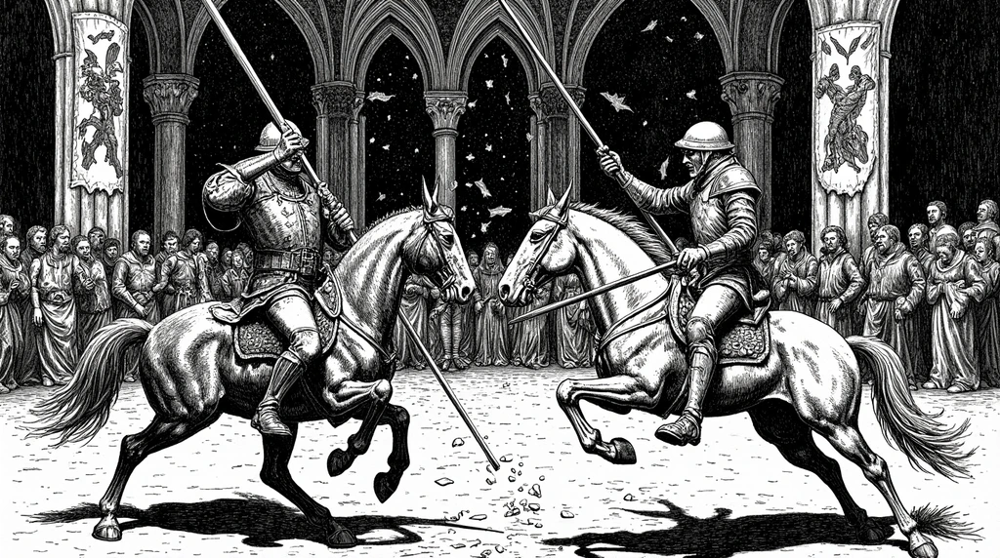
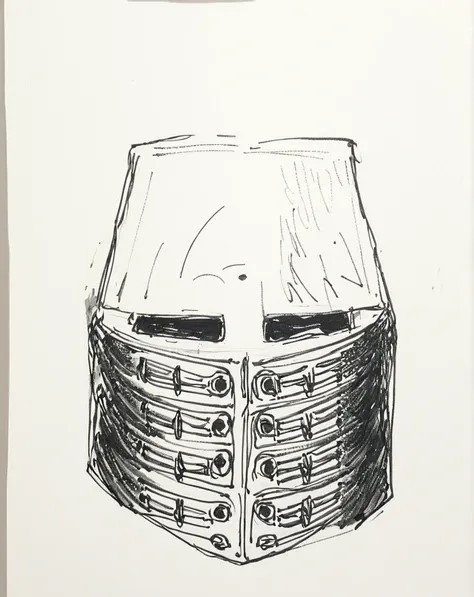
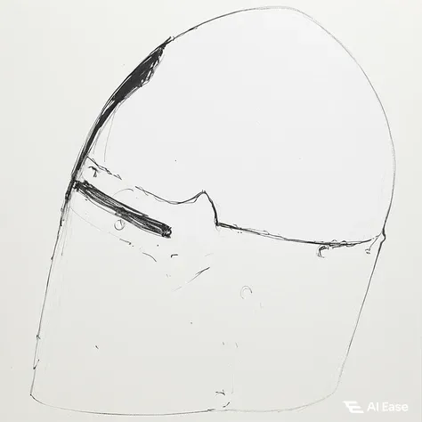
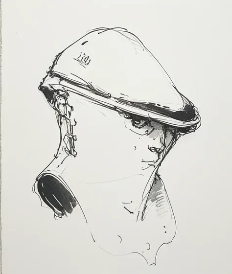

L'émerveillement des casques va de pair avec le mode de vie chevaleresque, qui trouve son apogée dans les tournois courtois. Les contemporains considéraient les ornements sur les casques comme des décorations artistiques et les appelaient en Allemagne par un mot décoratif « Kleinod » ou « Zimier », dérivé du mot français « cimier », lui-même dérivé de « cime » (sommet). Les représentations picturales du Moyen Âge doivent dans tous les cas être examinées afin de déterminer si elles reflètent une réalité ou une idéalisation. Cela vaut encore aujourd'hui dans un certain sens : les vêtements de cérémonie destinés à certaines personnes, qui ne pouvaient être portés que théoriquement, sont encore représentés dans leur intégralité sur les images officielles.
Le tournoi imposait d'autres exigences au casque que le combat réel. Au XIIIe et au XIVe siècle, on utilisait encore souvent des lances acérées et des épées ordinaires. Afin d'atténuer ce danger mortel en réalité inutile, on a commencé à renforcer l'armure à de nombreux endroits pour les joutes chevaleresques, puis on a même conçu des armures spéciales pour les tournois. Le poids supplémentaire ne jouait qu'un rôle secondaire, car avec des règles fixes et un temps d'action court, le porteur pouvait facilement renoncer à une partie de sa mobilité au profit d'une protection accrue. Cela se remarquait bien sûr aussi au niveau de la protection de la tête.
Les casques de tournoi ont une fonction différente de celle des casques de guerre. Ils sont souvent très lourds et la visibilité est très limitée en raison de la fente étroite, mais ils offrent une meilleure protection en cas de choc.
Les tournois n'étaient toutefois pas seulement considérés comme un sport. Avec leurs couleurs vives, ils représentaient les armoiries familiales, composées entre autres de cornes, de figures fantastiques et surtout de plumes. Les casques plus légers étaient peints ou ornés des éléments mentionnés ci-dessus.

Les deux types de combat
Dans le monde des tournois, il existe deux façons différentes de combattre.
D'une part, il y a la méthode qui consiste à essayer de désarçonner l'ennemi afin qu'il tombe à terre. Au milieu du combat, il y a une barrière devant laquelle les chevaux galopent. On la reconnaît notamment à l'arme, dont la lance a un gros pommeau. C'est une question de force.
L'autre méthode est beaucoup plus risquée, car le chevalier doit toucher le casque plutôt que le corps entier. L'armure est plus légère et offre donc une plus grande liberté de mouvement. Néanmoins, l'adversaire doit toujours rester en selle pour que le jeu puisse être remporté.
Le lieu du tournoi peut également changer beaucoup de choses. En Allemagne, par exemple, il était beaucoup plus courant de combattre avec une armure bien blindée qu'en France. Là-bas, c'était plus élégant, car l'apparence et l'honneur étaient plus importants, étant donné que la participation des nobles était plus connue. À la manière germanique, l'accent était davantage mis sur la technique et moins sur le titre de noblesse et la gloire.
Les 4 différentes casques de la période médievale
Le casque de pot
Il a été conçu pour protéger contre les flèches et les lances, c'est pourquoi son facteur de protection est très élevé. Cependant, il n'est pas très adapté au combat car il est très lourd.

Le heaume
Il a été conçu pour protéger contre les flèches et les lances, c'est pourquoi son facteur de protection est très élevé. Cependant, il n'est pas très adapté au combat car il est très lourd.

Le casque à pointe
Le casque à pointe a la particularité d'avoir été forgé d'une seule pièce, ce qui le rendait plus épais que les autres casques. Il était donc très lourd et ne permettait de voir qu'à travers une petite fente, raison pour laquelle il ne pouvait être utilisé que lors des tournois.

Le casque à arceau
Für frühe Formen des Tjosts (Lanzenreiten) war er gut geeignet, bot aber durch seine Geschlossenheit nur eingeschränkte Sicht. Untendrunter trug man Panzerkapuzen.